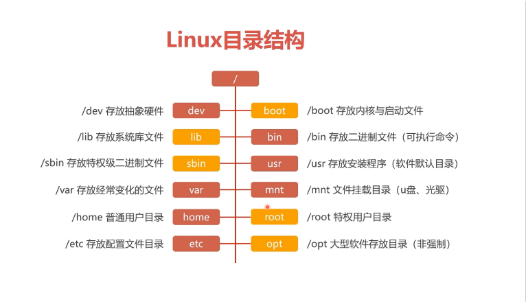

IP相关
- ip addr
- ifconfig
关闭防火墙
- systemctl stop / start / restart firewalld 关闭/开启/重启 防火墙
- systemctl disable firewalld 永久关闭防火墙
修改网络配置
- systemctl restart network 重启服务
linux的目录结构
- 根目录

- linux的文件系统
- Ext3 : 是一款日志文件系统，能够在系统异常宕机时避免文件系统资料丢失，并能 自动修复数据的不一致与错误。
- Etx4:Etx3的进阶版本,作为 RHEL 6 系统中的默认文件管理系统，它支持的存储容 量高达 1EB(1EB=1,073,741,824GB)，且能够有无限多的子目录。另外，Ext4 文件系统能够批量分配 block 块，从而极大地提高了读写效率。
- XFS 是一种高性能的日志文件系统，而且是 RHEL 7 中默认的文件管理系统，它的优势在发生意外宕机后尤其明显，即可以快速地恢复可能被破坏的文件，而且强大的 日志功能只用花费极低的计算和存储性能。并且它最大可支持的存储容量为 18EB， 这几乎满足了所有需求。
- 查看linux的文件系统
- cat /etc/fstab
创建文件夹
- mkdir -p 文件名
查看目录
- ls /目录名
- stat 文件名:查看详细信息
创建文本
- touch 文件名
改变当前的位置
- cd /目录名
- cd ~ :家目录
- cd - :返回上一次的地址
打印当前目录
- pwd
查看文本
- cat -n 文件 :带行号
- cat >> 文件 << EOF .... EOF
- more 查看文件百分比
- head 查看前10行
- tail 查看后10行
- tail -f 动态监听文件
linux快捷键
| 快捷键 | 说明 |
|---|---|
| tab键 | 自动补全代码 |
| ctrl + l | 清理终端显示 |
| clear / cls | 清理终端显示 |
| ctrl + c | 终止操作 |
echo命令
- echo $PATH :打印环境变量
特殊符号
- ">>" 追加重定向
- ">" 清空重定向
- "*" 通配符
复制
- cp -r 递归,复制目录以及目录的子孙后代
- cp -p 复制文件,且保持文件属性不变
- cp -a :相当于-pdr
移动
- mv
删除
- rm -f 不需要提示,强制删除
- rm -rf :全删
xargs命令
- xargs命令是给其他命令传递参数的一个过滤器，擅长将标准输入数据转换成命令行参数，xargs能够处理管道或者stdin并将其转换成特定命令的参数。 xargs默认命令是echo，空格是默认定界符
查找命令
- find 在哪里(目录) -type f -name '*.txt'
- 找到所有txt文件
- find / -name *.txt
管道命令
- Linux提供的管道符“|”讲两条命令隔开，管道符左边命令的输出会作为管道符右边命令的输入。
- 命令格式:命令A|命令B
grep(过滤)
- 文本搜素 grep 'xxx' 文件
- -i:忽略大小写
- -n:输出行号
- -v:反向选择
sed(流编辑器)
- 用法
- 文本替换
- sed -i 's/old/new/g' 文件:把这文件里的全部old替换为new
- 删除空白行
- sed -i '/^$/d' 文件名 :把这个文件里全部的空行删除
- 删除5-10行内容
- sed -i '5,10d' 文件名
- 文本替换
akw
- 语法:
- awk [option] 'script' var = value filename
- awk [options] -f scriptfile var=value filename
- 常用选项
- -F fs fs指定输入分隔符，fs可以是字符串或正则表达式，如-F:
- -v var=value 赋值一个用户定义变量，将外部变量传递给awk
- -f scripfile 从脚本文件中读取awk命令
- -m[fr] val 对val值设置内在限制，-mf选项限制分配给val的最大块数目；-mr选项限制记录的最大数目。这两个功能是Bell实验室版awk的扩展功能，在标准awk中不适用。
- 实例
- # NR > 行号
- awk 'NR==20,NR==30' /tmp/oldboy.txt
which命令
- which命令用于查找并显示给定命令的绝对路径，环境变量PATH中保存了查找命令时需要遍历的目录。
- which指令会在环境变量$PATH设置的目录里查找符合条件的文件。
- 也就是说，使用which命令，就可以看到某个系统命令是否存在，以及执行的到底是哪一个位置的命令。
- which pwd
- which python
别名alias
- 设置别名 alias rm = 'echo "别用rm"'
- 取消设置:unalias rm
seq(类似于for循环)
- seq -f '%03g' 起始值 终止值
scp远程复制文件
- 语法:
- scp 【可选参数】 本地源文件 远程文件标记
- 参数
- -r :递归复制整个目录
- -v:详细方式输出
- -q:不显示传输进度条
- -C：允许压缩
- 事例
- 传输本地文件到远程地址
- scp 本地文件 远程用户名@远程ip:远程文件夹/
- 复制远程文件到本地
- scp root@192.168.1.155:/home/oldboy.txt /tmp/oldboy.txt
- 传输本地文件到远程地址
du命令
- 显示目录和文件大小
- 实例:
- du -sh 文件名
top
-
top命令用于动态地件事进程活动与系统负载等信息
-
-
第一行 (uptime)
- 系统时间 主机运行时间 用户连接数(who) 系统1，5，15分钟的平均负载
-
第二行:进程信息
- 进程总数 正在运行的进程数 睡眠的进程数 停止的进程数 僵尸进程数
-
第三行:cpu信息
- 1.5 us：用户空间所占CPU百分比
- 0.9 sy：内核空间占用CPU百分比
- 0.0 ni：用户进程空间内改变过优先级的进程占用CPU百分比
- 97.5 id：空闲CPU百分比
- 0.2 wa：等待输入输出的CPU时间百分比
- 0.0 hi：硬件CPU中断占用百分比
- 0.0 si：软中断占用百分比
- 0.0 st：虚拟机占用百分比
-
第四行：内存信息（与第五行的信息类似与free命令）
- 8053444 total：物理内存总量
- 7779224 used：已使用的内存总量
- 274220 free：空闲的内存总量（free+used=total）
- 359212 buffers：用作内核缓存的内存量
-
第五行：swap信息
- 8265724 total：交换分区总量
- 33840 used：已使用的交换分区总量
- 8231884 free：空闲交换区总量
- 4358088 cached Mem：缓冲的交换区总量，内存中的内容被换出到交换区，然后又被换入到内存，但是使用过的交换区没有被覆盖，交换区的这些内容已存在于内存中的交换区的大小，相应的内存再次被换出时可不必再对交换区写入。

chattr
- 给文件加锁,只能写数据,无法删除
- chattr +a 文件:给文件加锁
- chattr -a 文件:给文件取消锁
lsattr
- 查看文件的隐藏属性
- lsattr 文件名
linux时间同步
- date +"%Y-%m-%d %T" 显示当前时间
- 同步系统时间和硬件时间，可以用hwclock命令
- //以系统时间为基准，修改硬件时间
- [root@oldboy_python ~ 10:29:07]#hwclock-w
- //以硬件时间为基准，修改系统时间
- [root@oldboy_python ~ 10:29:21]#hwclock-s
- //以系统时间为基准，修改硬件时间
Ntp时间服务器
- ntpdate -u ntp. aliyun. com:更新时间
wget命令
- wget 参数 下载地址
开关机命令
- reboot 命令用于重启机器
- poweroff 用于关闭系统